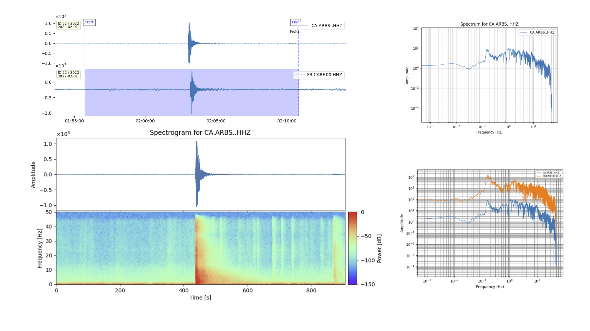
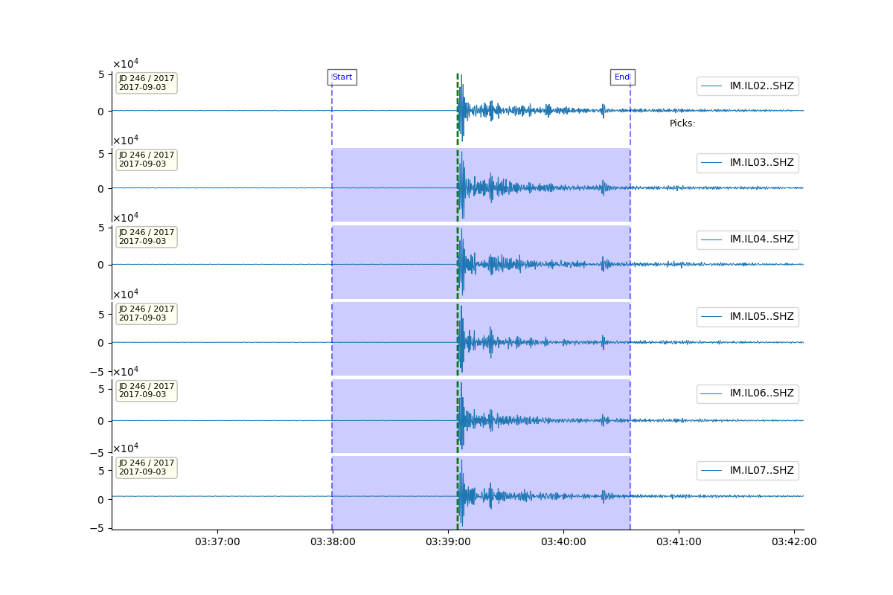
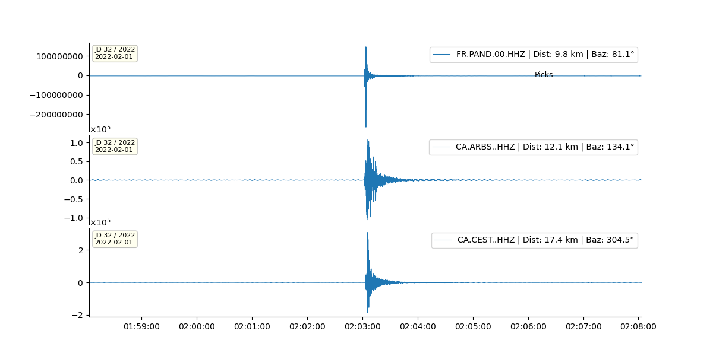
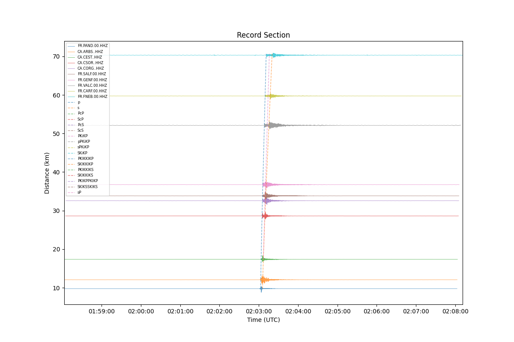

Examples
Example 1: Using quick
This example shows how to basically use surfquake quick for waveform processing and visualization.
Bash Command Example
# File paths can be absolute or relative
# reading a simple file
surfquake quick -w "/Users/admin/surf_test/carf220201000000.hhz"
# reading more than one file. It is a list of comma seprataed paths
surfquake quick -w "/Users/admin/surf_test/carf220201000000.hhz,/Users/admin/surf_test/arbs220201000000.hhz"
# Using wildcards. In the example will read all files inside the folder
surfquake quick -w "/Users/admin/surf_test/data/*"
Let's work with two seismograms.
After running the command surfquake quick -w ... both seismograms are plot on screen. I zoomed in the main event and then I clicked with right button over the first seismogram to select the starttime and I draged to the right to select the endtime. After this operation, I pressed the keyboard v to activate the prompt in the terminal. Over the terminal, I proceed first to cut the seismograms and plotting the spectrum of the first seismogram. Then, I pressed esc to re-activate the prompt. Then, I plot both spectrums and finally I plot the spectrogram. Finally I returned to picking mode. This are the actions I took in the terminal propt:

If users want processing with no vilualization use the -a option and set and -o to set an output folder. This idea was designed to automatically process data. Be in mind that you can proceed using commands inside a bash script. Moreover might be useful to set your plotting configuration first --plot_config.
Example 2: Using a Post-Script with SurfQuake
This example demonstrates how to use a custom Python post-processing script with surfquake quick for waveform processing and visualization.
Introduction
You can enhance your SurfQuake processing by injecting a custom Python script into the workflow using the --post_script option. This allows advanced users to modify waveform data, inject metadata, or apply event-specific logic dynamically.
Bash Command Example
surfquake quick \
-w "/Users/admin/Desktop/surf_test/nuclear/cut_event/*" \
--post_script /Users/admin/surf_test/my_script.py \
-c /Users/admin/surf_test/config.yaml \
-i /Users/admin/surf_test/metadata/metadata.xml
Example Output
You can visualize the waveform data as output from this processing command. An example of what the output looks like is shown below:
Ensure you have your plotting configuration (
--plot_config) properly set to produce visual output. In this example is shown the default plotting config. Drag with the right mouse from left to right to set the starttime and endtime. Thsi enable cut wavefrom or plot spectrogram from plotting commands, pressingv.

The Post-Processing Script
This is the contents of the user-defined my_script.py:
import numpy as np
def run(stream, inventory, **kwargs):
"""
User-defined post-processing hook for each event.
:param stream: obspy Stream
:param inventory: obspy Inventory (passed via kwargs)
:param event: dict with keys like origin_time, latitude, longitude, depth (passed via kwargs)
"""
inventory = kwargs.pop('inventory', None)
event = kwargs.pop('event', None)
if event is not None:
print(f"Post-processing {len(stream)} traces from event at {event['origin_time']}")
else:
print(f"Post-processing {len(stream)} traces (no event info provided)")
# Example: print mean of all traces
all_data = np.hstack([tr.data for tr in stream])
print("Mean amplitude:", np.mean(all_data))
for tr in stream:
tr.data = np.diff(tr.data)
return stream
Explanation
This script will:
- Print metadata about the event (if available).
- Concatenate all trace data and print the mean amplitude.
- Apply a numerical difference (
np.diff) to each trace in the stream.
Such post-scripts are ideal for user-specific filtering, header modification, or transforming waveform data before further analysis or plotting.
You can insert this script into any SurfQuake mode that accepts --post_script, including quick, processing, or daily batch modes.
Tips
- Always return the modified
stream. - You can access additional metadata via
kwargs(likeevent,inventory, etc.). - You can also modify trace headers using
tr.stats.<attribute>if needed.
SurfQuake’s post-script interface allows flexible and programmable interaction with seismic datasets. Great for prototyping, automation, or embedding research logic!
Example 3: Standard Events Processing
This example demonstrates how to use surfquake processing to perform batch waveform analysis and visualization using event metadata, inventory files, and configuration settings.
surfquake processing \
-p /Users/admin/surf_test/project.pkl \
-i /Users/admin/surf_test/metadata/inv_all.xml \
-e /Users/admin/surf_test/events/events.csv \
--plot_config /Users/admin/surf_test/config/plotting_config.yaml \
-ch HHZ \
-c /Users/admin/surf_test/config/config.yaml
Also, we can cut waveforms around the origin time of the events set in picks.csv, usinf -r ref. This is nice if we want to chop waveforms around specific time windows. Remember picks.csv have the same structure as events.csv and there is no need to set the columns lat, long...
surfquake processing \
-p /Users/admin/surf_test/project.pkl \
-c /Users/admin/surf_test/config.yaml \
-e /Users/admin/surf_test/events/events.csv \
-s CARF -ch HHZ -t 60 -r ref
Alternatively, we can cut waveforms according a specific wave speed. For example, very useful for cutting surface waves.
surfquake processing \
-p /Users/admin/surf_test/project.pkl \
-e /Users/admin/surf_test/events/picks.csv \
--vel 4.5 \
--cut_start_time 5 \
--cut_end_time 25
Explanation
-p: Path to a previously saved project file (used for loading existing data).-i: Inventory metadata file (StationXML or RESP).-e: CSV file with event origin time and focal parameters, if -r ref option is inlcuded, only set otigin time is required.--plot_config: YAML file defining how traces are plotted.-s: Select only specific station (e.g., -ch HHN,HHZ). Comma separated list. Valid if a project loaded-ch: Select only specific channels (e.g., -s ARNO). Comma separated list. Valid if a project loaded-c: YAML config file specifying processing pipeline (filtering, tapering, etc.).
This method cuts traces based on a specified group velocity (useful for surface wave analysis).
--vel: Surface wave velocity (km/s) used to calculate expected arrival time.--cut_start_time: Seconds before the expected arrival.--cut_end_time: Seconds after the expected arrival.
Sample events.csv Format
date;hour;latitude;longitude;depth;magnitude
2022-02-01;02:02:58.9;42.5102;1.4284;20.9;3.66
2022-02-02;23:35:29.7;42.5089;1.4293;20.7;1.71
2022-02-03;12:01:21.6;42.3047;2.2741;0.0;1.65
Sample Plot Configuration (plotting_config.yaml)
plotting:
traces_per_fig: 3
sort_by: distance
show_legend: True
title_fontsize: 9
plot_type: standard
sharey: False
show_crosshair: False
show_arrivals: True
Sample Processing Configuration (config.yaml)
Analysis:
process_1:
name: 'rmean'
method: 'linear'
process_2:
name: 'taper'
method: 'cosine'
max_percentage: 0.05
process_3:
name: 'filter'
type: 'bandpass'
fmin: 0.5
fmax: 5.5
corners: 4
zerophase: True
This processing pipeline: 1. Removes the mean. 2. Applies a cosine taper. 3. Applies a zero-phase bandpass filter (0.5–5.5 Hz).
Output
- Figures are plotted interactively unless
automaticis enabled: surfquake processing -a and it is set and-oto set an output folder. - Processed traces can be exported in
.h5format. - Cuts are based on the first teoretical arrival time metadata (
events.csv) or selected method (--vel,-r, etc.).
plot_type: standard 
plot_type: record 